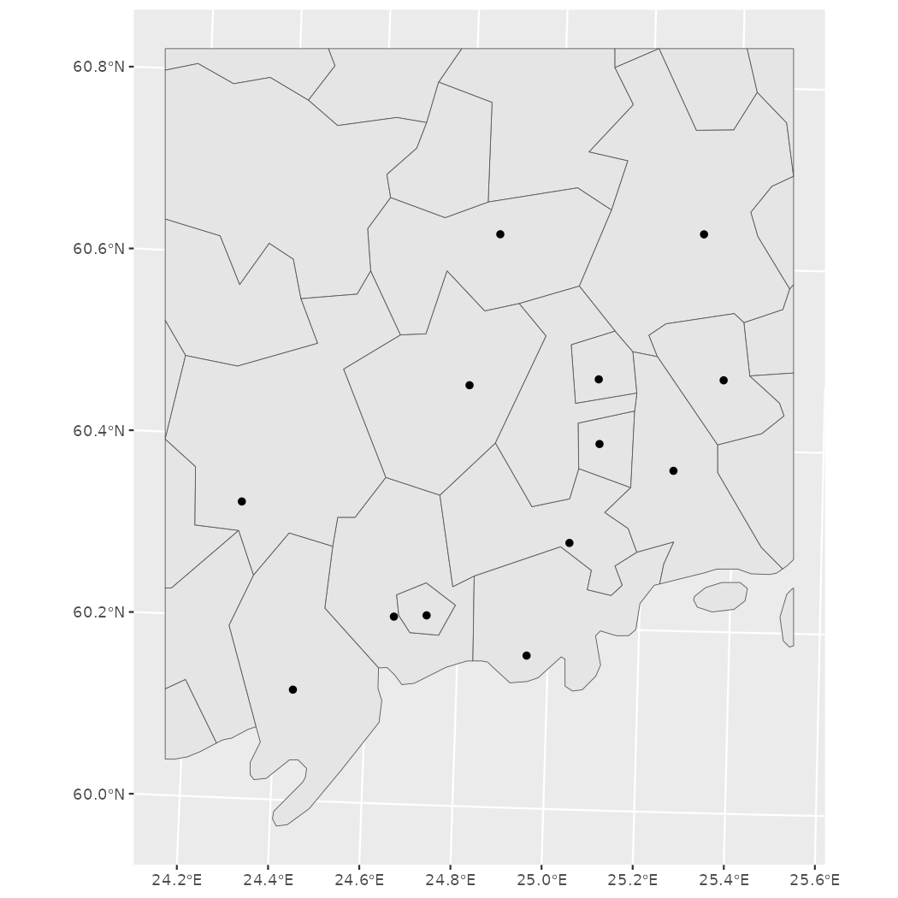
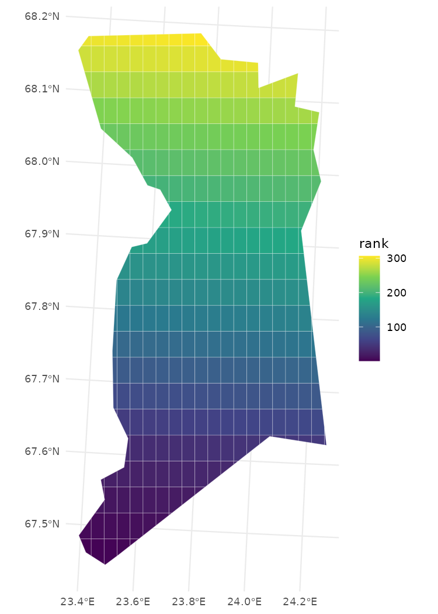

Spatial data manipulation and analysis R and geofi-package
Markus Kainu
2024-11-22
Source:vignettes/geofi_spatial_analysis.Rmd
geofi_spatial_analysis.RmdInstallation
geofi can be installed from CRAN using
# install from CRAN
install.packages("geofi")
# Install development version from GitHub
remotes::install_github("ropengov/geofi")Manuel Gimonds Intro to GIS and Spatial Analysis and especially it’s appendixes provide a good introduction to working with spatial data in R.
Coordinate reference systems
From the book above, have a look at chapter Coordinate Systems in R first.
When using spatial data in R it necessary to have all data in same
coordinate reference system (CRS). You can check the CRS of you
sf-object with sf::st_crs()-function. All the
data you can obtain using geofi is transformed
automatically into EPSG:3067. Most of spatial data
providers in Finland provide their data in the same CRS.
library(geofi)
library(sf)
library(dplyr)
muni <- get_municipalities()
point <- municipality_central_localities
crs <- st_crs(muni)
crs$input
#> [1] "EPSG:3067"However, sometimes data is not correctly projected and you have to
reproject it using st_transform. Web maps like Google maps
or Leaflet use WGS 1984 geographic (long/lat) coordinate system
which is fine with added interactive feature, but should be avoided when
plotting data on maps elsewhere. This is especially the case with large
northern countries like Finland. To demonstrate the effect lets
reproject the municipality data to WGS 1984 (usin EPSG code equivalent
4326) and plot it side to side with
EPSG:3067
muni_4326 <- st_transform(muni, "EPSG:4326")
crs <- st_crs(muni_4326)
crs$input
#> [1] "EPSG:4326"
library(ggplot2)
p1 <- ggplot(muni %>% st_union()) +
geom_sf() +
labs(subtitle = "EPSG:3067")
p2 <- ggplot(muni_4326 %>% st_union()) +
geom_sf() +
labs(subtitle = "EPSG:4326")
library(patchwork)
wrap_plots(list(p1,p2), nrow = 1) +
plot_annotation(title = "Map of Finland in two different CRS")You can see the that northern Finland is larger on the right and the grid below is different.
Area
To compute the area of polygons (municipality in this case), ordering them by size and plotting largest/smalles 10 can be as this.
Subsetting
You can subset data your plotting by subsetting your data in conventional filtering codes/names, or you can use geometric operations such as bounding box or intersection.
Lets imagine that we need a more detailed view of the metropolitan area of the Greater Helsinki that consist of the following municipalities: Espoo, Helsinki, Vantaa, Hyvinkää, Järvenpää, Kauniainen, Kerava, Kirkkonummi, Mäntsälä, Nurmijärvi, Pornainen, Sipoo, Tuusula and Vihti. You can subset the data just using the names of municipalities.
greater_helsinki <- c('Espoo','Helsinki','Vantaa','Hyvinkää',
'Järvenpää','Kauniainen','Kerava','Kirkkonummi',
'Mäntsälä','Nurmijärvi','Pornainen','Sipoo','Tuusula','Vihti')
greater_helsinki_polygon <- muni %>% filter(municipality_name_fi %in% greater_helsinki)
ggplot(greater_helsinki_polygon) +
geom_sf() +
geom_sf(data = point %>%
filter(teksti %in% toupper(greater_helsinki)))
Subsetting using bounding boxes
First, let’s create bounding box from greater Helsinki polygons.
bounding_box_polygon <- st_as_sfc(st_bbox(muni %>% filter(municipality_name_fi %in% greater_helsinki)))
ggplot(st_intersection(bounding_box_polygon, muni)) +
geom_sf() +
geom_sf(data = point %>% filter(teksti %in% toupper(greater_helsinki)))
Then, let’s use the point data (municipality central localities) to create the bounding box
bounding_box_point <- st_as_sfc(st_bbox(point %>% filter(teksti %in% toupper(greater_helsinki))))
ggplot(st_intersection(bounding_box_point, muni)) +
geom_sf() +
geom_sf(data = point %>% filter(teksti %in% toupper(greater_helsinki)))
Subsetting neigbours
Neighboring or intersecting objects can be found using
st_intersection() in following manner where we plot
Helsinki and it’s neighbors.
Dissolving polygons (Union)
Often there is need to create alternative regional breakdown to
existing ones and aggregating data accordingly. First we need to subset
the required members and then dissolve them using
st_union(). Below we classify municipalities in three equal
size categories based on area, dissolve them and plot.
Lets first plot the smallest category as a single multipolygon.
muni$area_class <- cut_number(x = as.numeric(muni$area), n = 3)
muni %>%
filter(area_class == levels(muni$area_class)[1]) %>%
st_union() %>%
ggplot() +
geom_sf()To union all three into same data you can use group_by
and summarise

Centroids, buffers, grids and voronois
The following operations derive from Marko Kallio’s course at CSC in February 2020 Spatial data analysis with R.
Polygon centroids
geofi contains data on municipality central locations
(geofi::municipality_central_localities). Instead of those
you may need the actual geographical centers ie. centroids of a polygon
that can be computed using st_centroid and plotted with
ggplot.
muni_centroids <- st_centroid(muni)
ggplot() +
geom_sf(data = muni) +
geom_sf(data = muni_centroids, color = "blue") +
# plot also the municipality_central_localities
geom_sf(data = municipality_central_localities, color = "red")Buffers
Buffers can be useful, for instance, calculating the share of buildings that are within certain radius from central localities. That example is not explained here, but we only show how to create 15km radius around polygon centroids.
Creating regular grids
You can download predefined grids from Statistics Finland using
get_statistical_grid and get_population_grid()
-functions in geofi-package. These data contains not just
the geographical shape, but also attribute data on population etc.
within the grid cells.
However, you may need to create your own custom grid, for instance to
aggregate your own point data, which can be created with
st_make_grid() function.
As describes by Marko Kallio in Spatial data analysis with R.
It creates a regular grid over bounding box of an ‘sf’ object. Can be given a certain cell size, or number of cells in x and y directions. ‘what’ tells the function what kind of regular grid is wanted (polygons, corners, centers). Fishnets of lines rather than polygons can be created simply by casting the polygons as “LINESTRING”s. The resulting polygon grid is an ‘sfc’ object, so it needs to be made ‘sf’ in order for us to add the ID-attribute.
For this example we pick northern Muonio municipality and create a custom 2km*4km grid on top of it. Afterward we could aggregate the number of reindeer for each grid cell if we would have the data.
muonio <- muni %>% filter(municipality_name_fi == "Muonio")
grid_sf <- st_make_grid(muonio, cellsize = c(2000,4000), what="polygons") %>%
st_sf()
grid_clip <- st_intersection(grid_sf, muonio)
grid_clip$rank <- 1:nrow(grid_clip)
ggplot(grid_clip) +
geom_sf(aes(fill = rank), color = alpha("white", 1/3), size = 3) +
scale_fill_viridis_c() +
theme_minimal()
Voronoi polygons
In mathematics, a Voronoi diagram is a partition of a plane into regions close to each of a given set of objects. Source: Wikipedia: Voronoi diagram
Perhaps not the most useful operation, but worth taking a look as
readily available in sf as function
st_voronoi. In this case, it creates a layer of polygons
that are closest to each municipality central locality.
library(geofi)
library(sf)
muni_voronoi <- municipality_central_localities %>%
st_union() %>%
st_voronoi() %>%
st_cast() %>%
st_sf() %>%
st_intersection(st_union(muni)) %>%
mutate(rnk = 1:nrow(.))
ggplot(muni_voronoi) +
geom_sf(aes(fill = rnk)) +
geom_sf(data = municipality_central_localities, shape = 4) +
scale_fill_fermenter(palette = "YlGnBu") +
theme_minimal() +
theme(axis.text = element_blank(),
axis.title = element_blank(),
panel.grid = element_blank(),
legend.position = "none")
Calculating distances
Calculating distances is certainly at the core of geospatial analysis. In this exercise we are interested on calculating distances between municipality central localities in Finland. As expected, we are talking great circle distances here, ie. as the crow flies type of distances.
You can calculate distance matrices using st_distance()-function
from sf-package
that computes distances between pairs of geometries.
geofi-package contains an internal data municipality_central_localities
that we use to calculate distances between points.
First we need to subset the data and replace original municipality
name column (teksti) with better from latest
municipality key.
kunta <- geofi::municipality_central_localities %>%
select(teksti,kuntatunnus) %>%
mutate(kuntatunnus = as.integer(kuntatunnus)) %>%
select(-teksti) %>%
left_join(geofi::municipality_key_2022 %>% select(municipality_code, municipality_name_fi),
by = c("kuntatunnus" = "municipality_code")) %>%
rename(teksti = municipality_name_fi)
kunta
#> Simple feature collection with 311 features and 2 fields
#> Geometry type: POINT
#> Dimension: XY
#> Bounding box: xmin: 91954.76 ymin: 6638646 xmax: 701036.8 ymax: 7755601
#> Projected CRS: ETRS89 / TM35FIN(E,N)
#> First 10 features:
#> kuntatunnus teksti geometry
#> 1 890 Utsjoki POINT (501086.5 7755601)
#> 2 498 Muonio POINT (360886 7542117)
#> 3 148 Inari POINT (522136.3 7616266)
#> 4 47 Enontekiö POINT (362091.4 7589569)
#> 5 273 Kolari POINT (362088.2 7471921)
#> 6 976 Ylitornio POINT (350962.8 7359884)
#> 7 732 Salla POINT (573395.9 7413832)
#> 8 698 Rovaniemi POINT (443256 7375804)
#> 9 854 Pello POINT (366564.7 7409490)
#> 10 320 Kemijärvi POINT (519078 7399655)Let’s aim at a data structure as below with both municipality name and code both from origin and destination.
| origin_name | origin_code | destination_name | destination_code | dist_m |
|---|---|---|---|---|
| Helsinki | 91 | Espoo | 92 | 15000 |
| Vantaa | 93 | Espoo | 92 | 18000 |
| Espoo | 92 | Espoo | 92 | 0 |
To get there lets create a for loop that calculates distance matrices from each municipality to all municipalities, assign each data to a list and finally bind the data frames into a single data.
d_list <- list()
kuntadatan_teksti_ja_kuntatunnus <- sf::st_drop_geometry(kunta) %>%
select(teksti,kuntatunnus)
for (i in 1:nrow(kunta)){
dist_tmp <- sf::st_distance(x = kunta[i,], y = kunta)
tibble(origin_name = kunta[i,]$teksti,
origin_code = kunta[i,]$kuntatunnus) %>%
bind_cols(kuntadatan_teksti_ja_kuntatunnus %>% rename(destination_name = teksti,
destination_code = kuntatunnus)) %>%
mutate(dist = dist_tmp[1,]) -> d_list[[i]]
}
kunta_dist <- do.call("bind_rows", d_list) %>%
mutate(dist = as.numeric(dist))
head(kunta_dist)
#> # A tibble: 6 × 5
#> origin_name origin_code destination_name destination_code dist
#> <chr> <int> <chr> <int> <dbl>
#> 1 Utsjoki 890 Utsjoki 890 0
#> 2 Utsjoki 890 Muonio 498 255404.
#> 3 Utsjoki 890 Inari 148 140915.
#> 4 Utsjoki 890 Enontekiö 47 216532.
#> 5 Utsjoki 890 Kolari 273 315903.
#> 6 Utsjoki 890 Ylitornio 976 423236.Finally we can draw two plots to verify our results. First let’s draw a bar plot of 20 municipality central localities nearest to Helsinki
ggplot(kunta_dist %>%
filter(origin_name == "Helsinki") %>%
arrange(dist) %>% slice(1:20),
aes(x = dist, y = reorder(destination_name, dist), label = round(dist))) +
geom_col() + geom_text(aes(x = 1000), color = "white", hjust = 0) +
labs(title = "Nearest 20 municipality localities to Helsinki", x = "distance in meters")Then, lets find the municipality central locality that is nearest to the center of Finland.
# We firt need the country map as a single polygon
geofi::get_municipalities() %>%
sf::st_union() %>%
# then we need to compute the centroid of that polygon
sf::st_centroid() -> fin_centroid
# The let's find the nearest neighbour with
distance <- st_distance(x = fin_centroid, y = kunta)
kuntadatan_teksti_ja_kuntatunnus %>%
mutate(dist = as.numeric(distance)) %>%
arrange(dist) -> closest_to_center
head(closest_to_center)
#> teksti kuntatunnus dist
#> 1 Siikalatva 791 13582.66
#> 2 Pyhäntä 630 17512.41
#> 3 Kärsämäki 317 33270.89
#> 4 Haapavesi 71 38730.91
#> 5 Vaala 785 50150.05
#> 6 Utajärvi 889 61041.41And finally lets draw a bar plot of 20 furthest localities
furthest20 <- kunta_dist %>%
filter(origin_name == closest_to_center[1,]$teksti) %>%
arrange(desc(dist)) %>% slice(1:20)
ggplot(furthest20,
aes(x = dist, y = reorder(destination_name, dist), label = round(dist))) +
geom_col() + geom_text(aes(x = 10000), color = "white", hjust = 0) +
labs(title = paste("Furthest 20 municipality localities \nfrom the most central locality of ", closest_to_center[1,]$teksti), x = "distance in meters")And at very last, we need to show those distances also on a map.
sf_lahto <- kunta %>%
filter(teksti %in% closest_to_center[1,]$teksti) %>%
select(teksti)
sf_paate <- kunta %>%
filter(teksti %in% furthest20$destination_name) %>%
select(teksti)
triplst <- list()
for (i in 1:nrow(sf_paate)){
triplst[[i]] <- rbind(
sf_lahto,
sf_paate[i,]
) %>%
summarize(m = mean(row_number()),do_union=FALSE) %>%
st_cast("LINESTRING")
}
trips <- do.call("rbind", triplst)
ggplot() +
geom_sf(data = muni %>% st_union(), alpha = .3) +
geom_sf(data = trips, color = "dim grey") +
geom_sf_label(data = sf_lahto, aes(label = teksti)) +
geom_sf_text(data = sf_paate, aes(label = teksti))